| 이미지 | 스킬명 | 단계 | 소모 | 설명 | 획득 방법 |
|---|---|---|---|---|---|
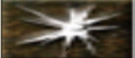 | 라이트 | 1단계 | 소모 MP 4 | 3600초 동안 밝은 광원을 만들어 시전자의 주위를 밝힘 | 기본습득 |
| 실드 | 1단계 | 소모 MP 8 | 1800초 동안 AC -2의 효과 적용 | 기본습득 | |
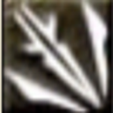 | 아이스대거 | 1단계 | 소모 MP 4 | 얼음으로 이루어진 작은 단검을 만들어 공격 대상에게 날려 데미지를 준다 | 기본습득 |
| 에너지 볼트 | 1단계 | 소모 MP 3 | 마법 에너지를 발사하여 대상에게 작은 피해를 준다 | 기본습득 | |
| 원드커터 | 1단계 | 소모 MP 4 | 바람의 흐름을 조종하여 원형의 돌니바퀴로 대상에게 날려 데미지를 준다 | 기본습득 | |
| 텔레포트 | 1단계 | 소모 MP 10 | 임의의 장소로 이동(텔레포트). 단, 순간이동 주문 반지를 장착한 상태에서 사용하면 지정장소로. | 기본습득 | |
| 홀리 웨폰 | 1단계 | 소모 MP 10 | 무기에 성스러운 주문을 부여하여 근거리 데미지+1, 근거리 명중+1 효과. 언데드 추가 데미지 | 기본습득 | |
| 힐 | 1단계 | 소모 MP 4 | 대상을 치유하여 HP를 조금 회복시킨다. 언데드 몬스터에겐 반대로 피해 | 기본습득 |
| 이미지 | 스킬명 | 단계 | 소모 | 설명 | 획득 방법 |
|---|---|---|---|---|---|
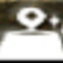 | 디크리즈 웨이트 | 2단계 | 소모 MP 10 | 1800초 동안 소지 무게 증가 +180 | 기본습득 |
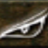 | 디텍션 | 2단계 | 소모 MP 15 | 화면에 숨어있는 PC나 NPC를 찾아낸다 | 기본습득 |
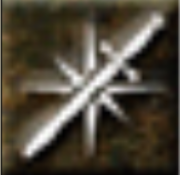 | 인첸트웨폰 | 2단계 | 소모 MP 20 | 근거리 무기를 선택하면 1800초간 근거리 데미지+2 적용 | 기본습득 |
| 칠 터치 | 2단계 | 소모 MP 8 | 대상 HP를 약간 빼앗아 자신의 것으로 만듦. 마법 시전시 성황치가 감소 | 기본습득 | |
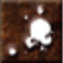 | 커스 포이즌 | 2단계 | 소모 MP 10 | 30초간 독에 중독시켜 지속적으로 HP 감소 | 기본습득 |
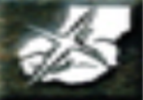 | 큐어 포이즌 | 2단계 | 소모 MP 15 | 독 상태 치료 | 기본습득 |
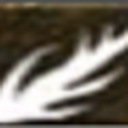 | 파이어 애로우 | 2단계 | 소모 MP 6 | 불꽃의 마법 화살로 대상에게 데미지 | 기본습득 |
| 이미지 | 스킬명 | 단계 | 소모 | 설명 | 획득 방법 |
|---|---|---|---|---|---|
| 라이트닝 | 3단계 | 소모 MP 20 | 직선 안에 있는 모든 적에게 피해를 준다 | 기본습득 | |
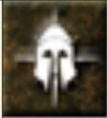 | 블레스트 아머 | 3단계 | 소모 MP 20 | 소지한 갑옷에 1800초 동안 AC-3 | 기본습득 |
| 익스트라 힐 | 3단계 | 소모 MP 12 | HP를 회복 | 기본습득 | |
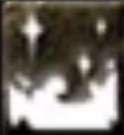 | 프로즌 클라우드 | 3단계 | 소모 MP 20 | 대상 주위에 차가운 냉기가 퍼져 주위 대상 피해 | 기본습득 |
| 커스 블라인드 | 3단계 | 소모 MP 20 | 대상이 암흑 상태 | 기본습득 | |
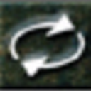 | 턴 언데드 | 3단계 | 소모 MP 20 | 확률적으로 언데드 몬스터를 죽임. 실패 시 버서커 된다 | 기본습득 |
| 이미지 | 스킬명 | 단계 | 소모 | 설명 | 획득 방법 |
|---|---|---|---|---|---|
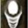 | 메디테이션 | 4단계 | 소모 MP 5 | 평소보다 더 많은 MP 회복, 행동 시 해제 | 하급마법상인 구입 |
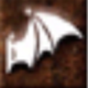 | 뱀파이어릭 터치 | 4단계 | 소모 MP 12 | 대상 HP 상당량 흡수 | 하급마법상인 구입 |
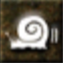 | 슬로우 | 4단계 | 소모 MP 20 | 일정 시간 대상 이동속도, 공격속도 느려짐 | 하급마법상인 구입 |
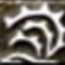 | 어스 제일 | 4단계 | 소모 MP 24 | 중심 주위 2칸 내 적 모두 타격 & 밀어내기 | 하급마법상인 구입 |
| 웨폰 브레이크 | 4단계 | 소모 MP 32 | 무기 일정 확률로 손상 | 하급마법상인 구입 | |
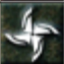 | 인첸트 덱스터리티 | 4단계 | 소모 MP 50 | 1200초간 대상 DEX+5 효과 | 하급마법상인 구입 |
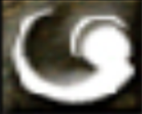 | 카운터 매직 | 4단계 | 소모 MP 20 | 16초간 마법 면역 | 하급마법상인 구입 |
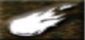 | 파이어 볼 | 4단계 | 소모 MP 20 | 큰 화염구로 적 피해 | 하급마법상인 구입 |
| 이미지 | 스킬명 | 단계 | 소모 | 설명 | 획득 방법 |
|---|---|---|---|---|---|
| 그레이터 힐 | 5단계 | 소모 MP 20 | HP 대량 회복. 언데드는 피해 | 하급마법상인 구입 | |
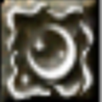 | 다크니스 | 5단계 | 소모 MP 15 | 시야 완전히 사라짐, 해제 가능. 마법 시전성화 감소 | 하급마법상인 구입 |
| 리무브 커스 | 5단계 | 소모 MP 20 | 모든 저주 해제. 특수한 저주에는 효과 없음 | 하급마법상인 구입 | |
| 마나 드레인 | 5단계 | 소모 MP 1 | 대상 MP 소실, 일부 흡수 | 하급마법상인 구입 | |
| 커스 패럴 라이즈 | 5단계 | 소모 MP 80 | 일정 확률로 마비 | 하급마법상인 구입 | |
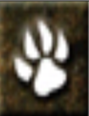 | 테이밍 몬스터 | 5단계 | 소모 MP 30 | 몬스터 일정 확률로 테이밍, 카리스마에 따라 수량 결정 | 하급마법상인 구입 |
| 이미지 | 스킬명 | 단계 | 소모 | 설명 | 획득 방법 |
|---|---|---|---|---|---|
| 블레스 웨폰 | 6단계 | 소모 MP 20 | 1200초 동안 대상에게 근거리 피해+2, 근거리 명중+2 효과가 적용. | 하급마법상인 구입 | |
| 선 버스트 | 6단계 | 소모 MP 20 | 사정거리는 짧지만 대상에게 강력한 폭발 피해를 준다. | 하급마법상인 구입 | |
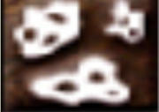 | 위크니스 | 6단계 | 소모 MP 10 | 일정 확률로 대상에게 30초 동안 근거리 데미지-5, 근거리 명중-15. 성공 확률은 사용자의 INT, 대상 MR에 영향받음. | 하급마법상인 구입 |
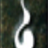 | 캔슬레이션 | 6단계 | 소모 MP 40 | 일정 확률로 대상에게 모든 마법과 효과를 제거함. 성공 확률은 INT, 대상 MR에 영향받음. | 하급마법상인 구입 |
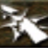 | 인첸트 마이티 | 6단계 | 소모 MP 50 | 1200초(20분) 동안 대상 STR+5 효과. | 하급마법상인 구입 |
| 크리에이트 좀비 | 6단계 | 소모 MP 5 | NPC의 시체를 좀비로 만듦. | 하급마법상인 구입 | |
| 헤이스트 | 6단계 | 소모 MP 40 | 지속 시간 동안 공격/이동 속도가 1단계 가속됨. | 하급마법상인 구입 |
| 이미지 | 스킬명 | 단계 | 소모 | 설명 | 획득 방법 |
|---|---|---|---|---|---|
| 그레이트 헤이스트 | 7단계 | 소모 MP 60 | 지속 시간 동안 공격 속도/이동 속도가 1단 가속 상태. | 하급마법상인 구입 | |
| 디지즈 | 7단계 | 소모 MP 10 | 일정 확률로 64초간 AC+12, 근거리 명중-5 효과. 성공 확률은 INT, 대상 MR에 영향받음. | 하급마법상인 구입 | |
| 서먼 몬스터 | 7단계 | 소모 MP 30 | 몬스터를 소환함. 소환 수는 캐릭터 CHA에 영향. | 하급마법상인 구입 | |
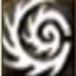 | 토네이도 | 7단계 | 소모 MP 40 | 주위 4칸에 회오리를 퍼트려 피해. | 하급마법상인 구입 |
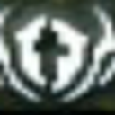 | 홀리워크 | 7단계 | 소모 MP 11 | 순간적으로 이동속도 증가. | 기본습득 |
| 힐 올 | 7단계 | 소모 MP 50 | HP를 회복, 언데드 몬스터에게 피해. | 하급마법상인 구입 |
| 이미지 | 스킬명 | 단계 | 소모 | 설명 | 획득 방법 |
|---|---|---|---|---|---|
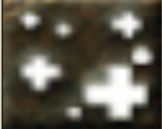 | 라이프 스트림 | 8단계 | 소모 MP 20 | 15칸 내 지역에 HP 회복 에너지 생성. | 드랍 |
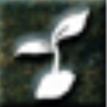 | 리젤렉션 | 8단계 | 소모 MP 50 | 대상을 부활시킴. | 드랍 |
| 블리자드 | 8단계 | 소모 MP 60 | 10칸 안의 적에게 피해. | 드랍 | |
| 사일런스 | 8단계 | 소모 MP 20 | 특정 지역 공기상태를 변환, 일정 기간 PC/NPC가 마법 및 채팅을 못함. | 드랍 | |
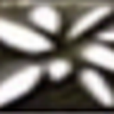 | 어스퀘이크 | 8단계 | 소모 MP 40 | 주위 범위 내 적에게 지진 피해. | 드랍 |
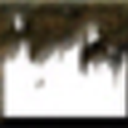 | 파이어 월 | 8단계 | 소모 MP 60 | 지정한 지역에 벽 생성, 적 통과시 피해. PC에게는 피해 없음. | 드랍 |
| 풀힐 | 8단계 | 소모 MP 48 | HP를 상당량 회복, 언데드는 피해. | 드랍 |
| 이미지 | 스킬명 | 단계 | 소모 | 설명 | 획득 방법 |
|---|---|---|---|---|---|
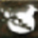 | 디케이 포션 | 9단계 | 소모 MP 20 | 지속 시간동안 물약형태 아이템 사용 불가. | 드랍 |
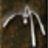 | 매스 텔레포트 | 9단계 | 소모 MP 60 | 모두를 텔레포트, 지정 제한은 텔레포트와 동일. 반지 기억에도 이동 가능. | 드랍 |
| 이문 투 함 | 9단계 | 소모 MP 30 | 대상에게 배리어 생성, 지속 피해 무효화. 두명 이상 뿌연 상태에선 불가. | 드랍 | |
| 포그 오브 슬리핑 | 9단계 | 소모 MP 40 | 지속 시간동안 대상 잠재운. 잡힌 NPC도 공격받으면 깨어남. 마법 시전시 성황치 감소. | 드랍 | |
| 파이어 스톰 | 9단계 | 소모 MP 48 | 범위 내 불꽃폭풍. | 드랍 |
| 이미지 | 스킬명 | 단계 | 소모 | 설명 | 획득 방법 |
|---|---|---|---|---|---|
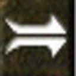 | 어드밴스 스피릿 | 10단계 | 소모 MP 20 | 지속시 최대 HP/MP +20%, 캔슬레이션/공격에 효과X, 리스타트 하면 효과 해제. | 드랍 |
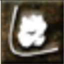 | 디스인테그레이트 | 10단계 | 소모 MP 70 | 거대한 창 낙하, 강력 피해. 캐릭터 성장치와 상관 없이 사용 가능. | 드랍, 소생상자 |
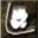 | 미티어 스트라이크 | 10단계 | 소모 MP 60 | 불꽃 운석을 소환, 3칸 내 모두에 강력 피해. | 중급마법상인 판매, 드랍, 소생상자 |
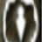 | 앱솔루트 베리어 | 10단계 | 소모 MP 30 | 일정시간 무적 배리어 생성. 단 마법사용 불가, 이동 외 행동 시 해제. | 드랍 |